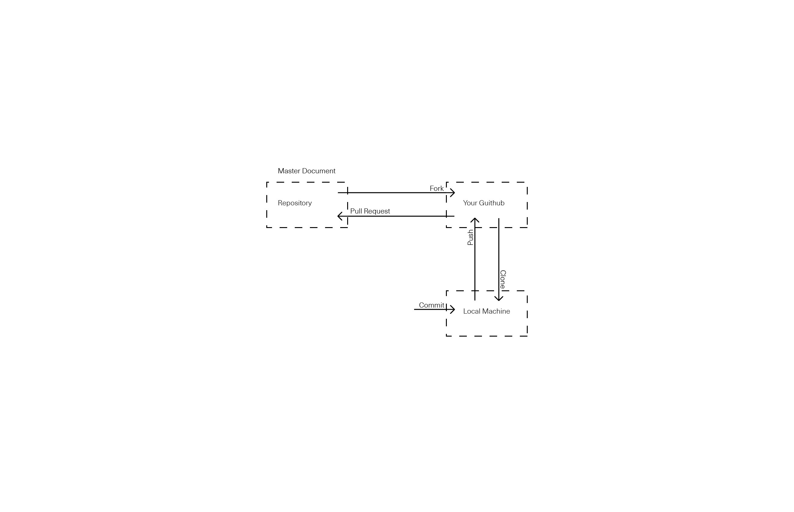

Why git? Google docs are good examples of how keeping track of changes and figuring out the most updated version of a project could be very frustrating when multiple people working collaboratively and making changes at the same time.
git is a free open source distributed version control system to manage multiple versions of a document/project. It tracks changes to any group of documents, files, or folders over time.
If you have not already install git, you could do so for mac, windows, or linux
What is GitHub? GitHub is a platform for hosting and collaborating on projects. GitHub uses git technologies and stores the projects on cloud.
If you don't already have one, please create an account on GitHub.com
Command line interface is a means of intracting with your computer through lines of text. On Mac OS the command line is refered to as Terminal and on windows it is called Command Prompt. If you are on a mac, you can open the Terminal from your Applications > Utilities > folder. On windows, the prompt is accessable via Programs > Accessories >.
Some useful commands ($ represents Mac Terminal) For more see link:
$ pwd path to current director$ ls lists the files and folders in the current directory$ cd change directory back to home folder$ cd [some-directory-name] change directory to a given folder
and for Windows:
chdir path to current directordir lists the files and folders in the current directorycd.. change directory back up to containing foldercd [some-directory-name] change directory to a given folder
